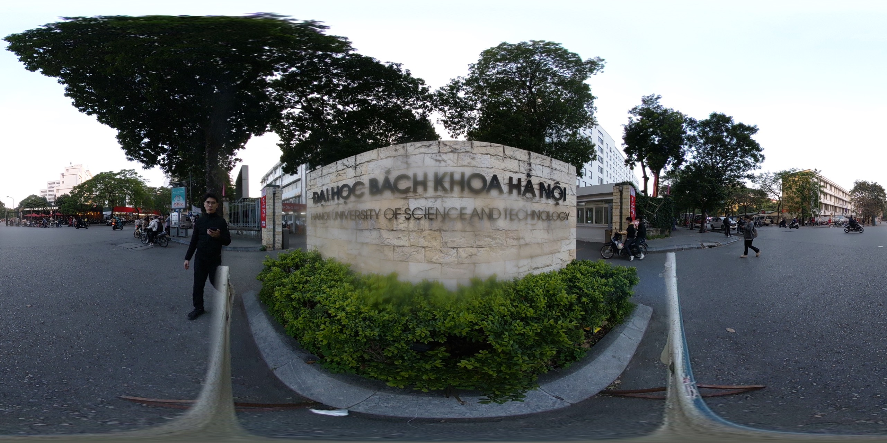
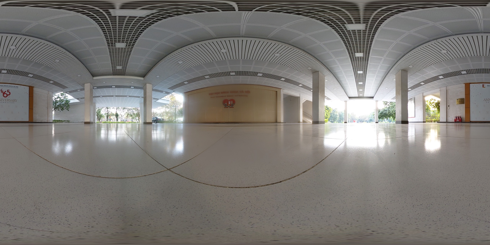
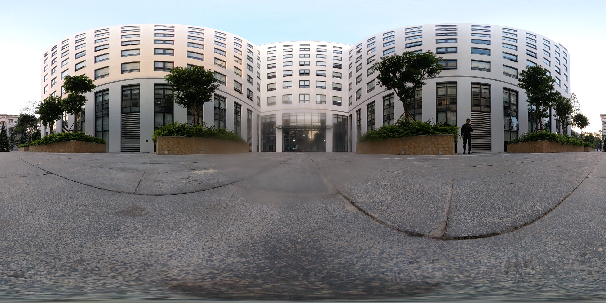
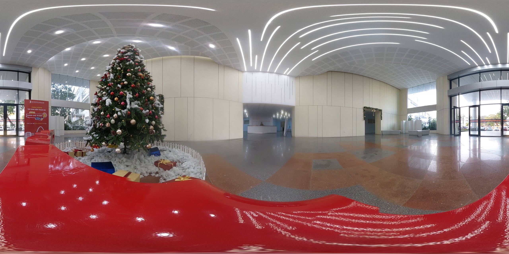
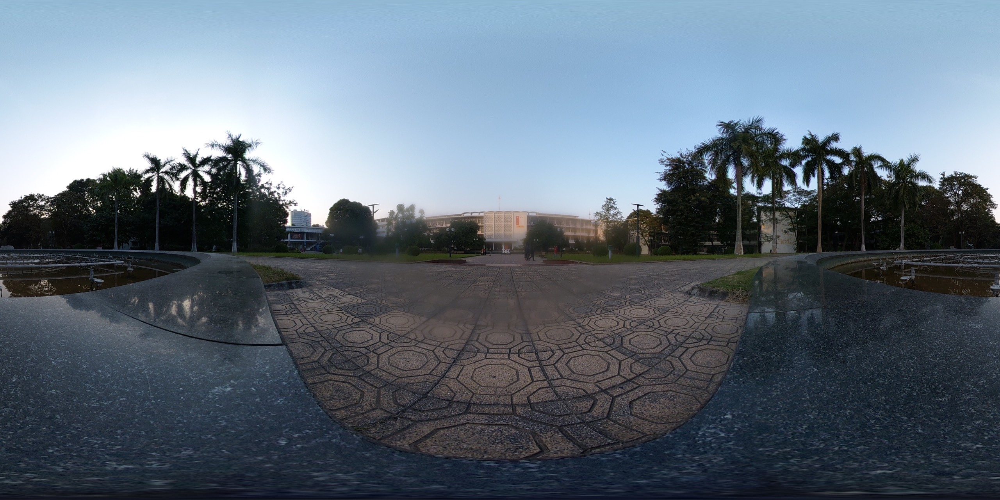
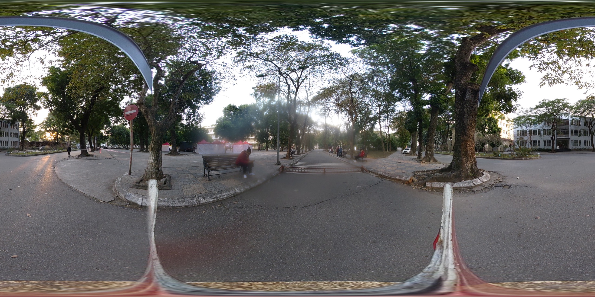
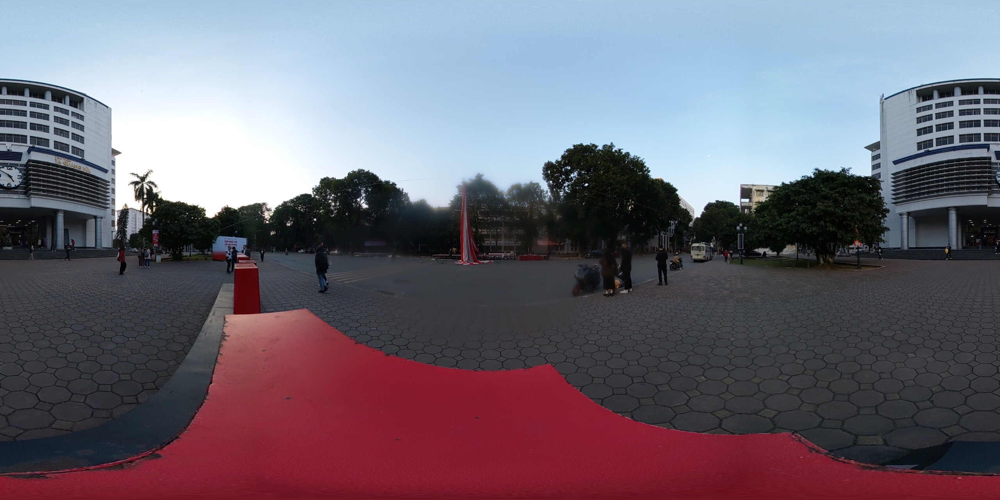

      
Hidden
Cổng đại học Bách Khoa
Play
Play Audio
Sảnh toà nhà B1
Cổng đại học Bách Khoa
Sảnh toà nhà C7
Khuân viên thư viện Tạ Quang Bửu
Đường tình yêu Bách Khoa
Sảnh toà nhà C1 - C2
Sảnh tòa nhà C1